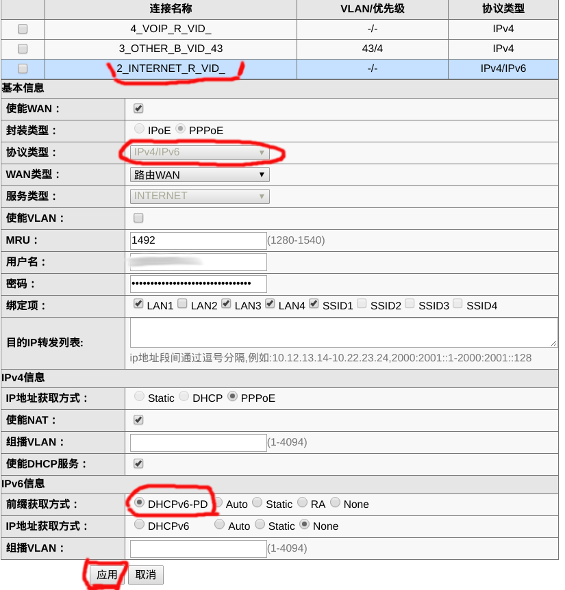

中国电信光猫华为HG8245C开启IPV6的方法
据报道，目前中国电信已成功创建了IP骨干网全面支持IPv6，并且在4G网络开启了IPv6服务，在100多个城域网提供了IPv6服务[1]。那么如何使家里宽带用上IPv6服务呢？这个问题最关键是设置入户光猫使其支持IPv6。以如何光猫华为HG8245C为例，说明设置过程。
基础知识
IPv6简介
网际协议第6版（英文：Internet Protocol version 6，缩写：IPv6）是网际协议（IP）的最新版本，用作互联网的网上层协议，用它来取代IPv4主要是为了解决IPv4地址枯竭问题，不过它也在其他很多方面对IPv4有所改进。
IPv6格式
IPv6二进位制下为128位长度，以16位为一组，每组以冒号“:”隔开，可以分为8组，每组以4位十六进制方式表示。例如：2001:0db8:85a3:08d3:1319:8a2e:0370:7344 是一个合法的IPv6地址。
同时IPv6在某些条件下可以省略：
- 每项数字前导的0可以省略，省略后前导数字仍是0则继续，例如下组IPv6是等价的。
1 | 2001:0DB8:02de:0000:0000:0000:0000:0e13 |
- 可以用双冒号“::”表示一组0或多组连续的0，但只能出现一次。
1 | * 2001:DB8:2de:0:0:0:0:e13 |
- 如果这个地址实际上是IPv4的地址，后32位可以用10进制数表示；因此::ffff:192.168.89.9 相等于::ffff:c0a8:5909。
IPv6地址分类
常用地址
IPv6地址可分为三种:
- 单播（unicast）地址：单播地址标示一个网上接口。协议会把送往地址的数据包送往给其接口。
- 任播（anycast）地址: Anycast是IPv6特有的数据发送方式，它像是IPv4的Unicast（单点传播）与Broadcast（多点广播）的综合。
- 多播（multicast）地址: 多播地址也称组播地址。多播地址也被指定到一群不同的接口，送到多播地址的数据包会被发送到所有的地址。
特殊地址
未指定地址
- ::/128－所有比特皆为零的地址称作未指定地址。
链路本地地址
- ::1/128－是一种单播绕回地址。如果一个应用程序将数据包送到此地址，IPv6堆栈会转送这些数据包绕回到同样的虚拟接口（相当于IPv4中的127.0.0.1/8）。
- fe80::/10－这些链路本地地址指明，这些地址只在区域连线中是合法的，这有点类似于IPv4中的169.254.0.0/16。
唯一区域位域
- fc00::/7－唯一区域地址（ULA，unique local address）只可在一群网站中绕送。
多播地址
- ff00::/8－这个前置表明定义在”IP Version 6 Addressing Architecture”（RFC 4291）中的多播地址[
IPv4转译地址
- ::ffff:x.x.x.x/96－用于IPv4映射地址。
- 2001::/32－用于Teredo隧道。
- 2002::/16－用于6to4。
IPv6优势
- 巨大的地址空间
- 新的协议头格式，加快路由速度
- 有效地、分级的寻址和路由结构
- 有状态和无状态的地址配置
- 内置的安全性
- 更好的支持Qos
- 用新协议处理邻节点的交互
- 可扩展性
设置华为光猫HG8245C开启IPv6步骤
在设置华为光猫HG8245C开启IPv6之前，一是要确保所在电信已支持IPv6服务。二是获取华为HG8245C隐藏管理员帐号telecomadmin的密码，通常为nE7jA%5m。
以隐藏管理员帐号telecomadmin登录华为HG8245C的Web管理控制台后，选择“网络->宽带设置”，选择连接”2_INTERNET_R_VID_”,设置协议类型为“IPv4/IPv6”，设置前缀获取方式为“DHCPv6-PD”,再点应用即可。

在Debian Linux中打开终端，输入如下命令或者浏览网站http://test-ipv6.com/验证IPv6。
1 | $ ip addr |
参考链接
- 中国电信：IPv6在线用户已超千万 年底将完成端到端服务能力.2018-07-16
- 维基百科.IPv6
- 掌握IPv6网络协议的优势,2010-06-10